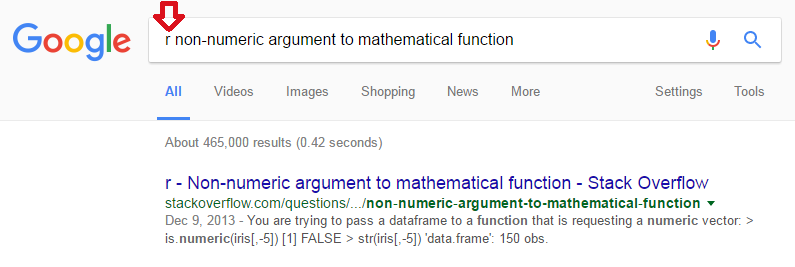
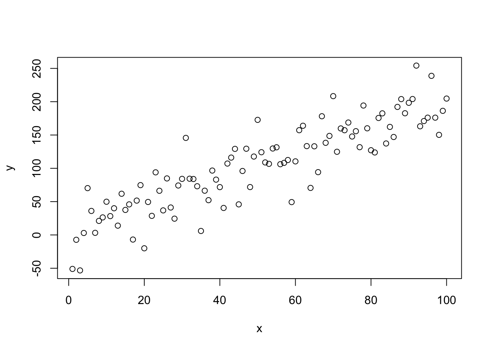
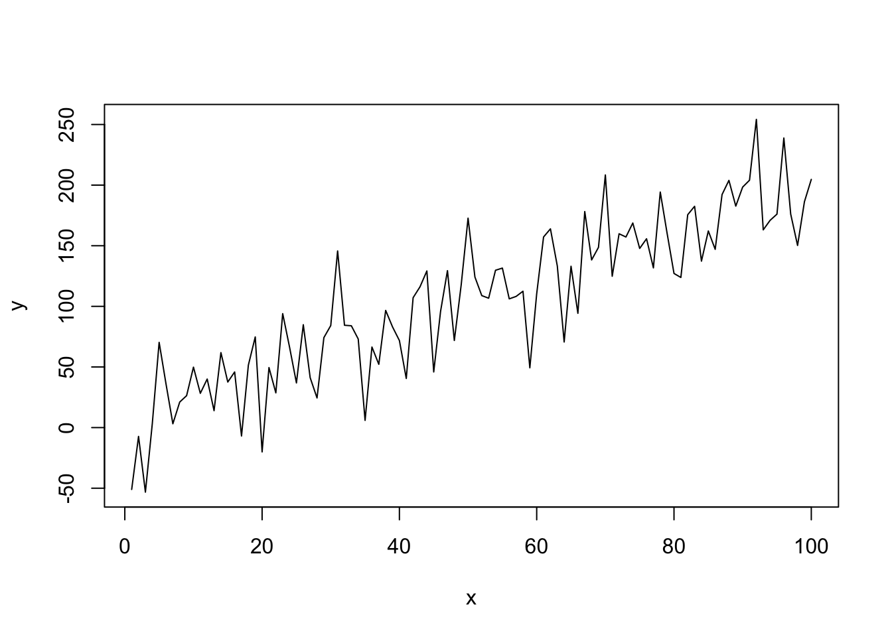
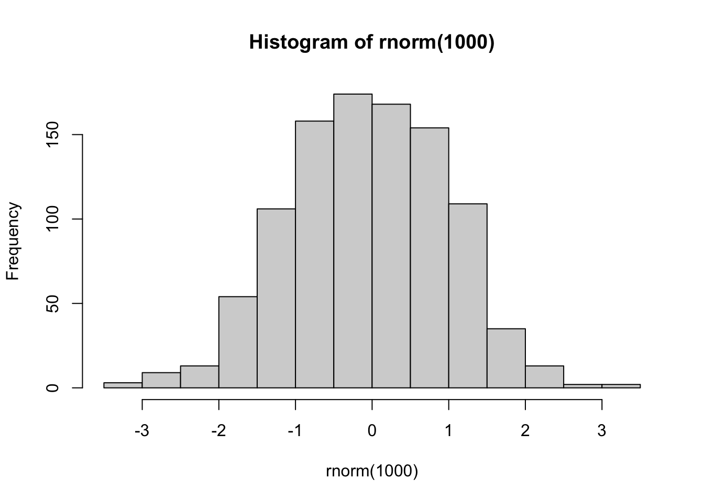
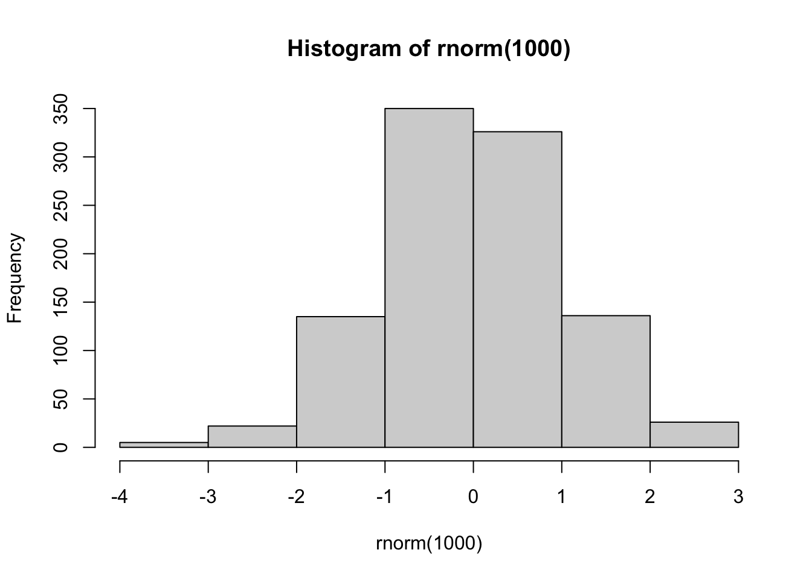
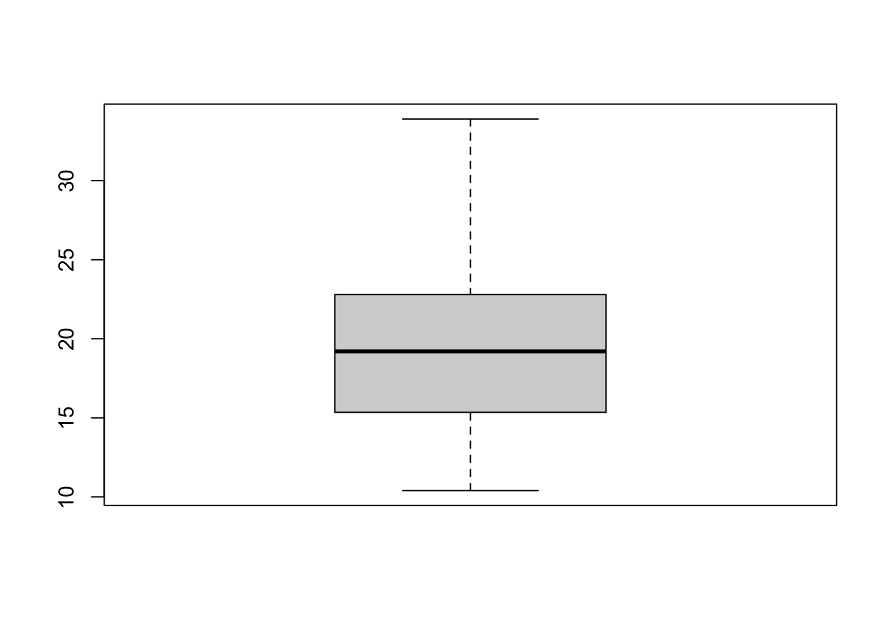
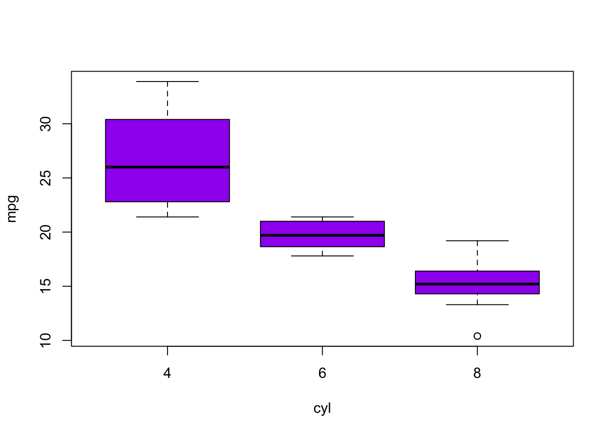
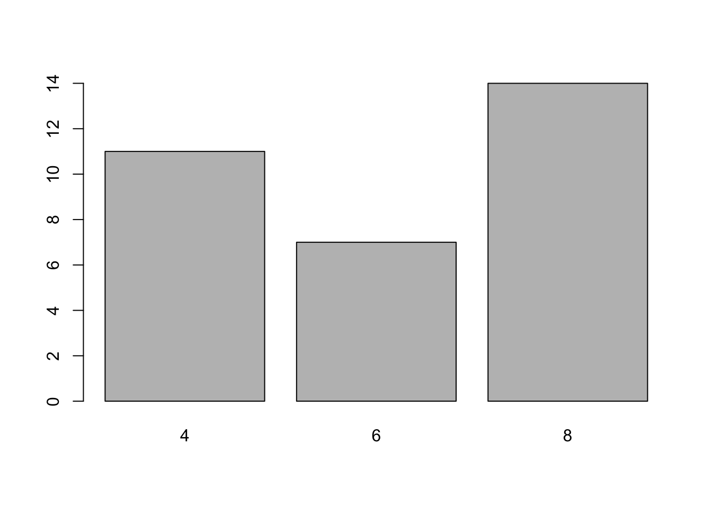

?mean
# ou
help(mean)3 R Básico
Introduziremos aqui os principais conceitos de programação em R. Indicamos a leitura deste capítulo a quem nunca teve contato com uma linguagem de programação ou a quem gostaria de entender um pouco melhor a estrutura de objetos, funções e classes do R.
Os tópicos discutidos aqui são especialmente importantes para entendermos o que é um data frame, a nossa base de dados dentro do R, e quais operações estão sendo realizadas por trás das cortinas quando estivermos filtrando suas linhas ou modificando suas colunas. Também são importantes para começarmos a criar as nossas próprias funções, o que deixa nossos códigos muito mais organizados, eficientes e compartilháveis.
3.1 Pedindo Ajuda
Na linguagem R é possível fazer bastante coisa à base da tentativa e erro. Além disso, grande parte do conhecimento é escalável, isto é, aprender a utilizar uma função é meio caminho andado para aprender todas as outras funções que operam de forma semelhante1.
No entanto, a intuição não é infalível, e recorrentemente vamos precisar de ajuda para rodar alguma função ou descobrir como fazer alguma tarefa no R. Felizmente, a comunidade R é bem ativa e existem vários lugares para buscar respostas. Nesta seção, vamos apresentar algumas dessas maneiras.
No R, há quatro principais entidades para se pedir ajuda:
- Help/documentação do R
- Stack Overflow
- Coleguinha
A busca por ajuda é feita preferencialmente, mas não necessariamente, na ordem acima.
3.1.1 Documentação do R
A documentação do R serve para você aprender a usar uma determinada função. Se você não sabe o que é uma função, não se preocupe. Discutiremos esse tópico nas Seções @ref(objetosFuncoes) e @ref(maisFuncoes).
Você pode acessar a documentação de uma função2 através de dois comandos: ?nome_da_funcao ou help(nome_da_funcao). Por exemplo, para acessar a documentação da função mean, fazemos:
Algumas dicas:
- Leia a seção Usage para ter noção de como usar a função.
- Os parâmetros da função estão descritos em Arguments.
- Os exemplos no final são particularmente úteis.
- Caso essa função não atenda às suas necessidades, a seção See Also sugere funções relacionadas.
Alguns pacotes possuem tutoriais de uso mais completos. Esses textos são chamados de vignettes e podem ser acessados com a função vignette(package = 'nomeDoPacote'). Por exemplo, vignette(package = 'dplyr').
3.1.2 Google
Há uma comunidade gigantesca de R gerando diariamente uma infinidade de conteúdos e discussões. Não raramente, você irá encontrar discussões sobre o seu problema simplesmente o descrevendo no Google. Pesquisas em inglês aumentam consideravelmente a chance de encontrar uma resposta.
Quando você recebe um erro na tentativa de rodar algum código no R e não sabe o que está errado, uma boa estratégia é pesquisar a mensagem de erro no Google. Essa deve ser sua primeira tentativa para resolver o problema. Repare na imagem abaixo o ‘r’ adicionado na busca. Isso ajuda bastante a encontrar uma solução.
log("5")
## Error in log("5"): non-numeric argument to mathematical function
3.1.3 Stack Overflow
O Stack Overflow e o Stack Overflow em Português são sites de Pergunta e Resposta amplamente utilizados por todas as linguagens de programação, e o R é uma delas. Nos EUA, chegam até a usar a reputação das pessoas dentro da plataforma como diferencial no currículo!
Provavelmente o Google lhe indicará uma dessas quando você estiver procurando ajuda. E quando todas as fontes possíveis de ajuda falharem, o Stack Overflow lhe dará o espaço para criar sua própria pergunta.
Um ponto importante: como fazer uma boa pergunta no Stack Overflow?
No site, existe um tutorial com uma lista de boas práticas, que se encontra aqui. Resumindo, as principais dicas são
- fazer perguntas concisas;
- fazer perguntas específicas;
- ter mente aberta; e
- ser gentil.
Porém, no caso do R, há outro requisito que vai aumentar muito sua chance de ter uma boa resposta: exemplinho minimal e reprodutível.
Ser minimal: usar bancos de dados menores e utilizar pedaços de códigos apenas suficientes para apresentar o seu problema. Não precisa de banco de dados de um milhão de linhas e nem colocar o seu código inteiro para descrever a sua dúvida.
Ser reprodutível: o seu código deve rodar fora da sua máquina. Se você não fornecer uma versão do seu problema que rode (ou que imite seu erro), as pessoas vão logo desistir de te ajudar. Por isso, nunca coloque bancos de dados que só você tem acesso. Use bancos de dados que já vem no R ou disponibilize um exemplo (possivelmente anonimizado) em
.csvna web para baixar. E se precisar utilizar funções de algum pacote, especifique os pacotes que você usou.
3.2 R como calculadora
O papel do Console no R é executar os nossos comandos. Ele avalia o código que passamos para ele e devolve a saída correspondente — se tudo der certo — ou uma mensagem de erro — se o seu código tiver algum problema.
Vamos começar com um exemplo simples:
1 + 1
## [1] 2Nesse caso, o nosso comando foi o código 1 + 1 e a saída foi o valor 2.
Quando compilamos? Quem vem de linguagens como o C ou Java espera que seja necessário compilar o código em texto para o código das máquinas (geralmente um código binário). No R, isso não é necessário. O R é uma linguagem de programação dinâmica que interpreta o seu código enquanto você o executa.
Tente agora jogar no console a expressão: 2 * 2 - (4 + 4) / 2.
Pronto! Você já é capaz de pedir ao R para fazer qualquer uma das quatro operações aritméticas básicas. A seguir, apresentamos uma lista resumindo como fazer as principais operações no R.
# adição
1 + 1
## [1] 2
# subtração
4 - 2
## [1] 2
# multiplicação
2 * 3
## [1] 6
# divisão
5 / 3
## [1] 1.666667
# potência
4 ^ 2
## [1] 16
# resto da divisão de 5 por 3
5 %% 3
## [1] 2
# parte inteira da divisão de 5 por 3
5 %/% 3
## [1] 1Repare que as operações e suas precedências são mantidas como na matemática, ou seja, divisão e multiplicação são calculadas antes da adição e subtração. E os parênteses nunca são demais!
Uma outra forma de executar uma expressão é escrever o código em um script, deixar o cursor em cima da linha e usar o atalho Ctrl + Enter. Assim, o comando é enviado para o Console, onde é diretamente executado. Essa operação é chamada de avaliar, executar ou rodar o código.
Se você digitar um comando incompleto, como 5 +, e apertar Enter, o R mostrará um +, o que não tem nada a ver com a adição da matemática. Isso significa que o R está esperando você enviar mais algum código para completar o seu comando. Termine o seu comando ou aperte Esc para recomeçar.
> 5 -
+
+ 5
[1] 0Se você digitar um comando que o R não reconhece, ele retornará uma mensagem de erro.
NÃO ENTRE EM PÂNICO!
Ele só está avisando que não conseguiu interpretar o comando. Você pode digitar outro comando normalmente em seguida.
> 5 % 2
Error: unexpected input in "5 % 2"
> 5 ^ 2
[1] 25Exercícios
1. Qual a diferença entre o R e o RStudio?
2. Podemos usar o RStudio sem o R? E o R sem o RStudio?
3. Precisamos compilar nossos códigos de R?
4. Calcule o número de ouro no R. Dica: o número de ouro é dado pela expressão \(\frac{1 + \sqrt{5}}{2}\).
5. Por que é preferível escrevermos sempre o nosso código no script e não no Console?
3.3 Objetos e funções
O R te permite salvar valores dentro de um objeto. Um objeto é simplesmente um nome que guarda um valor. Para criar um objeto, utilizamos o operador <-.
No exemplo abaixo, salvamos o valor 1 em a. Sempre que avaliarmos o objeto a, o R vai devolver o valor 1.
# Salvando `1` em `a`
a <- 1
# Avaliando o objeto `a`
a
## [1] 1Existem algumas regras para dar nomes aos objetos. A mais importante é: o nome deve começar com uma letra3. O nome pode conter números, mas não pode começar com números. Você pode usar pontos . e underlines _ para separar palavras.
# Permitido
x <- 1
x1 <- 2
objeto <- 3
meu_objeto <- 4
meu.objeto <- 5
# Não permitido
1x <- 1
_objeto <- 2
meu-objeto <- 3Atenção!
O R diferencia letras maiúsculas e minúsculas, isto é, b é considerado um objeto diferente de B. Rode o exemplo abaixo e observe que dois objetos diferentes são criados no Environment.
b <- 2
B <- 3
b
## [1] 2
B
## [1] 3O objeto mais importante para cientistas de dados é, claro, a base de dados. No R, uma base de dados é representada por objetos chamados de data frames. Na próxima seção, vamos entender o que são esses objetos.
Enquanto objetos são nomes que guardam valores, funções no R são nomes que guardam um código de R. A ideia é muito simples: sempre que você rodar uma função, o código que ela guarda será executado e um resultado nos será devolvido.
A sintaxe para usar uma função é a seguinte:
nome_da_funcao(arg1, arg2, argn)Entre parênteses, após o nome da função, temos o que chamamos de argumentos. Uma função pode ter qualquer número de argumentos e eles são sempre separados por vírgula.
Basicamente, uma função recebe seus argumentos, executa uma ação sobre ou a partir deles e devolve um resultado. Por exemplo
sum(1, 2)
## [1] 3A função sum() recebeu os argumentos 1 e 2, somou os dois valores e devolveu o resultado dessa operação: o valor 3.
Falaremos mais sobre funções na Seção @ref(maisFuncoes).
Exercícios
1. Qual a diferença entre os códigos abaixo?
# Código 1
33 / 11
# Código 2
divisao <- 33 / 112. Multiplique a sua idade por 12 e salve o resultado em um objeto chamado idade_em_meses. Em seguida, multiplique esse objeto por 30 e salve o resultado em um objeto chamado idade_em_dias.
3. Por que o nome meu-objeto não pode ser utilizado para criar um objeto? O que significa a mensagem de erro resultante?
meu-objeto <- 1
## Error: object 'meu' not found3.4 Data frames
Os data frames são de extrema importância no R, pois são os objetos que guardam os nossos dados. Eles são equivalentes a uma tabela do SQL ou uma planilha do Excel.
A principal característica de um data frame é possuir linhas e colunas4. Veja o exemplo abaixo:
mtcars
## mpg cyl disp hp drat wt qsec vs am gear carb
## Mazda RX4 21.0 6 160.0 110 3.90 2.620 16.46 0 1 4 4
## Mazda RX4 Wag 21.0 6 160.0 110 3.90 2.875 17.02 0 1 4 4
## Datsun 710 22.8 4 108.0 93 3.85 2.320 18.61 1 1 4 1
## Hornet 4 Drive 21.4 6 258.0 110 3.08 3.215 19.44 1 0 3 1
## Hornet Sportabout 18.7 8 360.0 175 3.15 3.440 17.02 0 0 3 2
## Valiant 18.1 6 225.0 105 2.76 3.460 20.22 1 0 3 1
## Duster 360 14.3 8 360.0 245 3.21 3.570 15.84 0 0 3 4
## Merc 240D 24.4 4 146.7 62 3.69 3.190 20.00 1 0 4 2
## Merc 230 22.8 4 140.8 95 3.92 3.150 22.90 1 0 4 2
## Merc 280 19.2 6 167.6 123 3.92 3.440 18.30 1 0 4 4
## Merc 280C 17.8 6 167.6 123 3.92 3.440 18.90 1 0 4 4
## Merc 450SE 16.4 8 275.8 180 3.07 4.070 17.40 0 0 3 3
## Merc 450SL 17.3 8 275.8 180 3.07 3.730 17.60 0 0 3 3
## Merc 450SLC 15.2 8 275.8 180 3.07 3.780 18.00 0 0 3 3
## Cadillac Fleetwood 10.4 8 472.0 205 2.93 5.250 17.98 0 0 3 4
## Lincoln Continental 10.4 8 460.0 215 3.00 5.424 17.82 0 0 3 4
## Chrysler Imperial 14.7 8 440.0 230 3.23 5.345 17.42 0 0 3 4
## Fiat 128 32.4 4 78.7 66 4.08 2.200 19.47 1 1 4 1
## Honda Civic 30.4 4 75.7 52 4.93 1.615 18.52 1 1 4 2
## Toyota Corolla 33.9 4 71.1 65 4.22 1.835 19.90 1 1 4 1
## Toyota Corona 21.5 4 120.1 97 3.70 2.465 20.01 1 0 3 1
## Dodge Challenger 15.5 8 318.0 150 2.76 3.520 16.87 0 0 3 2
## AMC Javelin 15.2 8 304.0 150 3.15 3.435 17.30 0 0 3 2
## Camaro Z28 13.3 8 350.0 245 3.73 3.840 15.41 0 0 3 4
## Pontiac Firebird 19.2 8 400.0 175 3.08 3.845 17.05 0 0 3 2
## Fiat X1-9 27.3 4 79.0 66 4.08 1.935 18.90 1 1 4 1
## Porsche 914-2 26.0 4 120.3 91 4.43 2.140 16.70 0 1 5 2
## Lotus Europa 30.4 4 95.1 113 3.77 1.513 16.90 1 1 5 2
## Ford Pantera L 15.8 8 351.0 264 4.22 3.170 14.50 0 1 5 4
## Ferrari Dino 19.7 6 145.0 175 3.62 2.770 15.50 0 1 5 6
## Maserati Bora 15.0 8 301.0 335 3.54 3.570 14.60 0 1 5 8
## Volvo 142E 21.4 4 121.0 109 4.11 2.780 18.60 1 1 4 2O mtcars é um data frame nativo do R que contém informações sobre diversos modelos de carros. Ele possui 32 linhas e 11 colunas5. Se você quiser saber mais sobre o mtcars, veja a documentação dele rodando ?mtcars no Console.
Nos próximos capítulos, os data frames serão o nosso principal objeto de estudo. Aprenderemos a selecionar, criar e modificar colunas, filtrar e ordenar linhas, juntar dois data frames e, a partir deles, construiremos gráficos e ajustaremos modelos.
Mas, da mesma forma que é muito mais fácil aprendermos a fritar um ovo após entendermos o que é o fogo, uma frigideira e um ovo, vamos estudar nas próximas seções quais são as estruturas que formam os data frames e como manipulá-las.
3.5 Classes
A classe de um objeto é muito importante dentro do R. É a partir dela que as funções e operadores conseguem saber exatamente o que fazer com um objeto.
Por exemplo, podemos somar dois números, mas não conseguimos somar duas letras (texto):
1 + 1
## [1] 2
"a" + "b"
## Error in "a" + "b": non-numeric argument to binary operatorO operador + verifica que "a" e "b" não são números (ou que a classe deles não é numérica) e devolve uma mensagem de erro informando isso.
Observe que para criar texto no R, colocamos os caracteres entre aspas. As aspas servem para diferenciar nomes (objetos, funções, pacotes) de textos (letras e palavras). Os textos são muito comuns em variáveis categóricas e são popularmente chamados de strings no contexto de programação.
a <- 10
# O objeto `a`, sem aspas
a
## [1] 10
# A letra (texto) `a`, com aspas
"a"
## [1] "a"Para saber a classe de um objeto, basta rodarmos class(nome-do-objeto).
x <- 1
class(x)
## [1] "numeric"
y <- "a"
class(y)
## [1] "character"
class(mtcars)
## [1] "data.frame"As classes mais básicas dentro do R são:
- numeric
- character
- logical
Geralmente serão utilizados como sinônimos:
- número, valor real, numeric, double
- texto, string, character, caracteres
- lógico, logical, booleano, valor TRUE/FALSE
Veja alguns exemplos:
# numeric
1
0.10
0.95
pi
# characters
"a"
"1"
"positivo"
# logical
TRUE
FALSEUm objeto de qualquer uma dessas classes é chamado de objeto atômico.
Esse nome se deve ao fato de essas classes não se misturarem, isto é, para um objeto ter a classe numeric, por exemplo, todos os seus valores precisam ser numéricos.
Mas como atribuir mais de um valor a um mesmo objeto? Para isso, precisamos criar vetores.
3.5.1 Exercícios
1. Guarde em um objeto chamado nome uma string contendo o seu nome completo.
2. Guarde em um objeto chamado cidade o nome da cidade onde você mora. Em seguida, guarde em um objeto chamado estado o nome do estado onde você mora. Usando esses objetos, resolva os itens abaixo:
a. Utilize a função
nchar()para contar o número de caracteres em cada cada string.b. Interprete o resultado do seguinte código:
paste(cidade, estado)- c. Interprete o resultado do seguinte código:
paste(cidade, estado, sep = " - ")d. Desafio. Como você reproduziria o mesmo resultado do item (c) sem utilizar o argumento
sep?e. Qual a diferença entre as funções
paste()epaste0()?
3.6 Vetores
Vetores são estruturas muito importantes dentro R. Em especial, pensando em análise de dados, precisamos estudá-los pois cada coluna de um data frame será representada como um vetor.
Vetores no R são apenas conjuntos indexados de valores. Para criá-los, basta colocar os valores separados por vírgulas dentro de um c().
vetor1 <- c(1, 5, 3, -10)
vetor2 <- c("a", "b", "c")
vetor1
## [1] 1 5 3 -10
vetor2
## [1] "a" "b" "c"Os objetos vetor1 e vetor2 são vetores.
Uma maneira fácil de criar um vetor com uma sequência de números é utilizar o operador :.
# Vetor de 1 a 10
1:10
## [1] 1 2 3 4 5 6 7 8 9 10
# Vetor de 10 a 1
10:1
## [1] 10 9 8 7 6 5 4 3 2 1
# Vetor de -3 a 3
-3:3
## [1] -3 -2 -1 0 1 2 3Quando dizemos que vetores são conjuntos indexados, isso quer dizer que cada valor dentro de um vetor tem uma posição. Essa posição é dada pela ordem em que os elementos foram colocados no momento em que o vetor foi criado. Isso nos permite acessar individualmente cada valor de um vetor.
Para isso, colocamos o índice do valor que queremos acessar dentro de colchetes [].
vetor <- c("a", "b", "c", "d")
vetor[1]
## [1] "a"
vetor[2]
## [1] "b"
vetor[3]
## [1] "c"
vetor[4]
## [1] "d"Você também pode colocar um conjunto de índices dentro dos colchetes, para pegar os valores contidos nessas posições:
vetor[c(2, 3)]
## [1] "b" "c"
vetor[c(1, 2, 4)]
## [1] "a" "b" "d"Essa operação é conhecida como subsetting, pois estamos pegando subconjuntos de valores de um vetor.
Se você tentar acessar uma posição do vetor que não existe, ele retornará NA, indicando que esse valor não existe. Discutiremos o que são NA’s na Seção @ref(valoresEspeciais).
vetor[5]
## [1] NAUm vetor só pode guardar um tipo de objeto e ele terá sempre a mesma classe dos objetos que guarda. Para saber a classe de um vetor, rodamos class(nome-do-vetor).
vetor1 <- c(1, 5, 3, -10)
vetor2 <- c("a", "b", "c")
class(vetor1)
## [1] "numeric"
class(vetor2)
## [1] "character"Se tentarmos misturar duas classes, o R vai apresentar o comportamento conhecido como coerção.
vetor <- c(1, 2, "a")
vetor
## [1] "1" "2" "a"
class(vetor)
## [1] "character"Veja que todos os elementos do vetor se transformaram em texto. Agora temos um vetor com o texto "1", o texto "2" e o texto "a". Como um vetor só pode ter uma classe de objeto dentro dele, classes mais fracas serão sempre reprimidas pelas classes mais fortes. Como regra de bolso: caracteres serão sempre a classe mais forte. Então, sempre que você misturar números e texto em um vetor, os números virarão texto.
Falaremos bastante de coerção nas próximas seções e capítulos, trazendo exemplos de quando ela ajuda e de quando ela atrapalha.
Você também pode fazer operações com vetores.
vetor <- c(0, 5, 20, -3)
vetor + 1
## [1] 1 6 21 -2Ao rodarmos vetor1 + 1, o R soma 1 em cada um dos elementos do vetor. O mesmo acontece com qualquer outra operação aritmética.
vetor - 1
vetor / 2
vetor * 10Você também pode fazer operações que envolvem mais de um vetor:
vetor1 <- c(1, 2, 3)
vetor2 <- c(10, 20, 30)
vetor1 + vetor2
## [1] 11 22 33Neste caso, o R irá alinhar os dois vetores e somar elemento a elemento. Esse tipo de comportamento é chamado de vetorização. Isso pode ficar um pouco confuso quando os dois vetores não possuem o mesmo tamanho. Tente adivinhar qual será a saída do código a seguir:
vetor1 <- c(1, 2)
vetor2 <- c(10, 20, 30, 40)
vetor1 + vetor2
## [1] 11 22 31 42Embora estejamos somando dois vetores de tamanho diferentes, o R não devolve um erro (o que parecia ser a resposta mais intuitiva). O R alinhou os dois vetores e, como eles não possuíam o mesmo tamanho, o primeiro foi repetido para ficar do mesmo tamanho do segundo. É como se o primeiro vetor fosse na verdade c(1, 2, 1, 2). Esse comportamento é chamado de reciclagem.
Embora contra-intuitiva, a reciclagem é muito útil no R graças a um caso particular muito importante. Quando somamos vetor + 1 no nosso primeiro exemplo, o que o R está fazendo por trás é transformando o 1 em c(1, 1, 1, 1) e realizando a soma vetorizada c(0, 5, 20, -3) + c(1, 1, 1, 1). Isso porque o número 1 nada mais é do que um vetor de tamanho 1, isto é, 1 é igual a c(1).
Usaremos esse comportamento no R o tempo todo e é muito importante a reciclagem para termos certeza de que o R está fazendo exatamente aquilo que gostaríamos que ele fizesse.
Um outro caso interessante de reciclagem é quando o comprimento dos vetores não são múltiplos um do outro.
vetor1 <- c(1, 2, 3)
vetor2 <- c(10, 20, 30, 40, 50)
vetor1 + vetor2
## Warning in vetor1 + vetor2: longer object length is not a multiple of shorter
## object length
## [1] 11 22 33 41 52Neste caso, duas coisas aconteceram:
O R realizou a conta, repetindo cada valor do primeiro vetor até que os dois tenham o mesmo tamanho. No fundo, a operação realizada foi
c(1, 2, 3, 1, 2) + c(10, 20, 30, 40, 50).Como essa operação é ainda menos intuitiva e raramente desejada, o R devolveu um aviso dizendo que o comprimento do primeiro vetor maior não é um múltiplo do comprimento do vetor menor.
Exercícios
1. Guarde em um objeto a sequência de números de 0 a 5 e resolva os itens abaixo.
a. Use subsetting para fazer o R devolver o primeiro número dessa sequência. Em seguida, faça o R devolver o último número da sequência.
b. Multiplique todos os valores do vetor por -1. Guarde o resultado em um novo objeto chamado
vetor_negativo.
2. Crie um vetor com o nome de três frutas, guarde em um objeto chamado frutas e resolva os itens abaixo.
a. Utilize a a função
length()para verificar o tamanho do vetor.b. Inspecione a saída de
paste("eu gosto de", frutas)e responda se o tamanho do vetor mudou.
3. O que é reciclagem? Escreva um código em R que exemplifique esse comportamento.
4. O que é coerção? Escreva um código em R que exemplifique esse comportamento.
5. Por que a coerção pode ser um problema na hora de importarmos bases de dados para o R?
6. Use a função sum() para somar os valores de 1 a 100.
7. Considere o vetor booleano a seguir:
dolar_subiu <- c(TRUE, TRUE, FALSE, FALSE, TRUE, FALSE, TRUE)Este vetor tem informação de uma semana (7 dias, começando no domingo) indicando se o dólar subiu (TRUE) ou não subiu (FALSE) no respectivo dia. Interprete o resultado dos códigos abaixo:
a.
length(dolar_subiu)b.
dolar_subiu[2]c.
sum(dolar_subiu)d.
mean(dolar_subiu)
3.7 Testes lógicos
Poder fazer qualquer tipo de operação lógica é um dos motivos pelos quais programar nos deixar mais eficientes. Dê bastante atenção a elas, pois usaremos comparações lógicas o tempo todo!
Uma operação lógica nada mais é do que um teste que retorna verdadeiro ou falso. No R (e em outras linguagens de programação), esses dois valores recebem uma classe especial: logical.
O verdadeiro no R vai ser representado pelo valor TRUE e o falso pelo valor FALSE. Esses nomes no R são reservados, isto é, você não pode chamar nenhum objeto de TRUE ou FALSE.
TRUE <- 1
## Error in TRUE <- 1 : invalid (do_set) left-hand side to assignmentChecando a classe desses valores, vemos que são lógicos6. Eles são os únicos possíveis valores dessa classe.
class(TRUE)
## [1] "logical"
class(FALSE)
## [1] "logical"Agora que conhecemos o TRUE e FALSE, podemos explorar os teste lógicos. Começando pelo mais simples: vamos testar se um valor é igual ao outro. Para isso, usamos o operador ==.
# Testes com resultado verdadeiro
1 == 1
## [1] TRUE
"a" == "a"
## [1] TRUE
# Testes com resultado falso
1 == 2
## [1] FALSE
"a" == "b"
## [1] FALSETambém podemos testar se dois valores são diferentes. Para isso, usamos o operador !=.
# Testes com resultado falso
1 != 1
## [1] FALSE
"a" != "a"
## [1] FALSE
# Testes com resultado verdadeiro
1 != 2
## [1] TRUE
"a" != "b"
## [1] TRUEPara comparar se um valor é maior que outro, temos à disposição 4 operadores:
# Maior
3 > 3
## [1] FALSE
3 > 2
## [1] TRUE
# Maior ou igual
3 >= 4
## [1] FALSE
3 >= 3
## [1] TRUE
# Menor
3 < 3
## [1] FALSE
3 < 4
## [1] TRUE
# Menor ou igual
3 <= 2
## [1] FALSE
3 <= 3
## [1] TRUEUm outro operador muito útil é o %in%. Com ele, podemos verificar se um valor está dentro de um conjunto de valores (vetor).
3 %in% c(1, 2, 3)
## [1] TRUE
"a" %in% c("b", "c")
## [1] FALSENós começamos essa seção dizendo que usaremos testes lógicos o tempo todo. O motivo para isso é que eles fazem parte de uma operação muito comum na manipulação de bases de dados: os filtros.
No Excel, por exemplo, quando você filtra uma planilha, o que está sendo feito por trás é um teste lógico.
Falamos anteriormente que cada coluna das nossas bases de dados será representada dentro do R como um vetor. O comportamento que explica a importância dos testes lógicos na hora de filtrar uma base está ilustrado abaixo:
minha_coluna <- c(1, 3, 0, 10, -1, 5, 20)
minha_coluna > 3
## [1] FALSE FALSE FALSE TRUE FALSE TRUE TRUE
minha_coluna[minha_coluna > 3]
## [1] 10 5 20Muitas coisas aconteceram aqui, vamos por partes.
Primeiro, na operação minha_coluna > 3 o R fez um excelente uso do comportamento de reciclagem. No fundo, o que ele fez foi transformar (reciclar) o valor 3 no vetor c(3, 3, 3, 3, 3, 3, 3) e testar se c(1, 3, 0, 10, -1, 5, 20) > c(3, 3, 3, 3, 3, 3, 3).
Como os operadores lógicos também são vetorizados (fazem operações elemento a elemento), os testes realizados foram 1 > 3, 3 > 3, 0 > 3, 10 > 3, -1 > 3, 5 > 3 e, finalmente, 20 > 3. Cada um desses testes tem o seu próprio resultado. Por isso a saída de minha_coluna > 3 é um vetor de verdadeiros e falsos, respectivos a cada um desses 7 testes.
A segunda operação traz a grande novidade aqui: podemos usar os valores TRUE e FALSE para selecionar elementos de um vetor!
A regra é muito simples: retornar as posições que receberem TRUE, não retornar as posições que receberem FALSE. Portanto, a segunda operação é equivalente a:
minha_coluna[c(FALSE, FALSE, FALSE, TRUE, FALSE, TRUE, TRUE)]
## [1] 10 5 20O vetor lógico filtra o vetor minha_coluna, retornando apenas os valores maiores que 3, já que foi esse o teste lógico que fizemos.
Essa é a mágica que acontece por trás de filtros no R. Na prática, não precisaremos usar colchetes, não lembraremos da reciclagem e nem veremos a cara dos TRUE e FALSE. Mas conhecer esse processo é muito importante, principalmente para encontrar problemas de código ou de base.
Para finalizar, listamos na tabela abaixo os principais operadores lógicos.
| Operador | Descrição |
|---|---|
| x < y | x menor que y? |
| x <= y | x menor ou igual a y? |
| x > y | x maior que y? |
| x >= y | x maior ou igual a y? |
| x == y | x igual a y? |
| x != y | x diferente de y? |
| !x | Negativa de x |
| x | y | x ou y são verdadeiros? |
| x & y | x e y são verdadeiros? |
| x %in% y | x pertence a y? |
| xor(x, y) | x ou y são verdadeiros (apenas um deles)? |
Por fim, veja algumas diferenças entre comparações lógicas no SQL e no R:
- Igualdade: no SQL é só um sinal de igual:
2 = 1. No R são dois:2 == 1. - Diferença: no SQL, usamos
<>. No R usamos!=. - Negação: em vez de usar a palavra
NOTigual ao SQL, usamos!no R. Por exemplo,id not in ('1', '2', '3')fica!(id %in% c(1, 2, 3)).
Exercícios
1 O código abaixo vai guardar no objeto segredo um número inteiro entre 0 e 10. Sem olhar qual número foi guardado no objeto, resolva os itens a seguir:
segredo <- round(runif(1, min = 0, max = 10))a. Teste se o segredo é maior ou igual a 0.
b. Teste se o segredo é menor ou igual a 10.
c. Teste se o segredo é maior que 5.
d. Teste se o segredo é par.
e. Teste se
segredo * 5é maior que a sua idade.f. Desafio. Escreva um teste para descobrir o valor do segredo.
2. Escreva um código em R que devolva apenas os valores maiores ou iguais a 10 do vetor abaixo:
vetor <- c(4, 8, 15, 16, 23, 42)3. Use o vetor numeros abaixo para responder as questões seguintes.
numeros <- -4:2a. Escreva um código que devolva apenas valores positivos do vetor
numeros.b. Escreva um código que devolta apenas os valores pares do vetor
numeros.c. Filtre o vetor para que retorne apenas aqueles valores que, quando elevados a 2, são menores do que 4.
3.8 Valores especiais
Vimos anteriormente que se você tentar acessar uma posição que não existe dentro de um vetor, ele retorna um valor estranho.
vetor <- c(1, 2, 3)
vetor[4]
## [1] NAEsse valor, o NA, é tratado de forma especial no R. Ele representa a ausência de informação, isto é, a informação existe, mas nós (e o R) não sabemos qual é.
O NA para o R nada mais é do que o valor faltante ou omisso da Estatística. O famoso missing. Geralmente, quando temos uma base com valores faltando, como a idade para alguns indivíduos da nossa amostra, não significa que a idade deles não existe. Significa apenas que não temos essa informação.
Esse conceito é muito importante para entender o resultado da expressão abaixo.
5 == NA
## [1] NAEm um primeiro momento, poderíamos esperar que o resultado fosse FALSE. Mas, sabendo o significado por trás do NA — um valor desconhecido —, a verdadeira pergunta que estamos fazendo é: 5 é igual a um valor que existe, mas que não sei qual é? É como se eu perguntasse se eu tenho 5 moedas na mão, mas lhe mostrasse a mão fechada. A resposta para isso é não sei ou, dentro do R, NA.
Um outro exemplo:
idade_ana <- 30
idade_beto <- NA
idade_carla <- NA
idade_ana == idade_beto
## [1] NA
idade_beto == idade_carla
## [1] NAEu posso saber a idade da Ana, mas se eu não souber a idade do Beto, não sei se os dois tem a mesma idade. Por isso, NA. Da mesma forma, se não sei nem a idade do Beto nem da Carla, também não tenho como saber se os dois têm a mesma idade. Outra vez NA.
Mas e quando queremos saber se um valor é NA ou não? Para fazer esse teste, temos que rodar is.na(valor-ou-objeto).
is.na(NA)
## [1] TRUE
is.na(idade_ana)
## [1] FALSE
is.na(idade_beto)
## [1] TRUERepare que essa função também é vetorizada.
is.na(c(idade_ana, idade_beto, idade_carla))
## [1] FALSE TRUE TRUEAssim como o NA, existem outros valores especiais muito comuns no R.
O NaN (not a number) representa indefinições matemáticas.
0/0
## [1] NaN
log(-1)
## Warning in log(-1): NaNs produced
## [1] NaNO Inf (infinito) representa um número muito grande (que o computador não consegue representar) ou um limite matemático.
# O computador não consegue representar um número tão grande.
# O número é então """arredondado""" para infinito.
10^310
## [1] Inf
# Limite matemático.
1 / 0
## [1] Inf
# O "menos infinito" também existe.
-1 / 0
## [1] -InfO NULL (nulo) representa a ausência de um objeto. Ele não tem significado prático para a análise dados. Está mais em sintonia com comportamentos de lógica de programação. Muitas vezes vamos definir um objeto como nulo para dizer ao R que não queremos dar um valor para ele. Muito utilizado em funções.
Da mesma forma que utilizados is.na() para testar se um objeto é NA, utilizamos is.nan(), is.infinite() ou is.null() para testar se um objeto é NaN, infinito ou nulo.
nao_sou_um_numero <- NaN
objeto_infinito <- Inf
objeto_nulo <- NULL
is.nan(nao_sou_um_numero)
## [1] TRUE
is.infinite(objeto_infinito)
## [1] TRUE
is.null(objeto_nulo)
## [1] TRUEExercícios
1. Quais as diferenças entre NaN, NULL, NA e Inf? Digite expressões que retornem cada um desses valores.
2. Escreva um código que conte o número de NAs do vetor b.
b <- c(1, 0, NA, NA, NA, NA, 7, NA, NA, NA, NA, NA, 2, NA, NA, 10, 1, 1, NA)3.9 Listas
Chegamos ao último tópico antes de voltarmos aos data frames: as listas.
Listas são objetos muito importantes dentro do R. Primeiro porque todo data frame é uma lista. Segundo porque elas são bem parecidas com vetores, mas com uma diferença essencial: você pode misturar diferentes classes de objetos dentro dela.
Para criar uma lista, rodamos list(valor1, valor2, valor3).
list(1, "a", TRUE)
## [[1]]
## [1] 1
##
## [[2]]
## [1] "a"
##
## [[3]]
## [1] TRUEVeja que não houve coerção. Ainda temos um valor número, um texto e um valor lógico dentro da lista.
O subsetting de listas é um pouco diferente do que o de vetores. Isso porque cada elemento de uma lista também é uma lista. Veja o que acontece se tentarmos usar [] para pegar um elemento de uma lista.
lista <- list(1, "a", TRUE)
lista[1]
## [[1]]
## [1] 1
class(lista[1])
## [1] "list"O R nos retorna uma lista com apenas aquele elemento. Se quisermos o elemento de fato dentro de cada posição, precisamos usar dois colchetes:
lista[[1]]
## [1] 1
class(lista[[1]])
## [1] "numeric"Cada elemento de uma lista ser uma lista é importante pois isso nos permite colocar vetores de tamanhos diferentes em cada posição. Isso faz das listas uma estrutura bem flexível para guardar dados.
lista <- list(1:3, "a", c(TRUE, TRUE, FALSE, FALSE))
lista
## [[1]]
## [1] 1 2 3
##
## [[2]]
## [1] "a"
##
## [[3]]
## [1] TRUE TRUE FALSE FALSE
lista[1]
## [[1]]
## [1] 1 2 3
lista[2]
## [[1]]
## [1] "a"
lista[3]
## [[1]]
## [1] TRUE TRUE FALSE FALSEÉ muito comum darmos nomes para cada posição de uma lista.
dados_cliente <- list(cliente = "Ana Silva", idade = 25, estado_civil = NA)
dados_cliente
## $cliente
## [1] "Ana Silva"
##
## $idade
## [1] 25
##
## $estado_civil
## [1] NAAgora, dentro da lista, o valor Ana Silva, por exemplo, está sendo atribuído ao nome cliente. Esse nome só existirá dentro da lista.
Um detalhe importante: os iguais utilizados nas atribuições dos nomes dentro da lista não podem ser substituídos por <-.
Quando as posições de uma lista tem nome, podemos acessar seus valores diretamente utilizando o operador $.
dados_cliente$cliente
## [1] "Ana Silva"
dados_cliente$idade
## [1] 25
dados_cliente$estado_civil
## [1] NARepare que o R devolve o valor dentro de cada posição, e não uma lista.
dados_cliente[1]
## $cliente
## [1] "Ana Silva"
dados_cliente$cliente
## [1] "Ana Silva"
class(dados_cliente[1])
## [1] "list"
class(dados_cliente$cliente)
## [1] "character"Isto implica que, nesse exemplo, dados_cliente$cliente é equivalente a dados_cliente[[1]].
Conforme ficamos mais e mais proficientes na linguagem R, as listas passam a ficar cada vez mais frequentes. Voltaremos a falar delas diversas vezes nos próximos capítulos, em especial no Capítulo @ref(funcionais).
3.10 Mais sobre data frames
Chegou a hora de usarmos tudo o que aprendemos na seção anterior para exploramos ao máximo o nosso objeto favorito: o data frame.
Na seção anterior, nós dissemos que data frames são listas. Isso é importante pois todas as propriedades de uma lista valem para um data frame.
A melhor forma de entender essa equivalência é ver um data frame representado como uma lista.
as.list(mtcars)
## $mpg
## [1] 21.0 21.0 22.8 21.4 18.7 18.1 14.3 24.4 22.8 19.2 17.8 16.4 17.3 15.2 10.4
## [16] 10.4 14.7 32.4 30.4 33.9 21.5 15.5 15.2 13.3 19.2 27.3 26.0 30.4 15.8 19.7
## [31] 15.0 21.4
##
## $cyl
## [1] 6 6 4 6 8 6 8 4 4 6 6 8 8 8 8 8 8 4 4 4 4 8 8 8 8 4 4 4 8 6 8 4
##
## $disp
## [1] 160.0 160.0 108.0 258.0 360.0 225.0 360.0 146.7 140.8 167.6 167.6 275.8
## [13] 275.8 275.8 472.0 460.0 440.0 78.7 75.7 71.1 120.1 318.0 304.0 350.0
## [25] 400.0 79.0 120.3 95.1 351.0 145.0 301.0 121.0
##
## $hp
## [1] 110 110 93 110 175 105 245 62 95 123 123 180 180 180 205 215 230 66 52
## [20] 65 97 150 150 245 175 66 91 113 264 175 335 109
##
## $drat
## [1] 3.90 3.90 3.85 3.08 3.15 2.76 3.21 3.69 3.92 3.92 3.92 3.07 3.07 3.07 2.93
## [16] 3.00 3.23 4.08 4.93 4.22 3.70 2.76 3.15 3.73 3.08 4.08 4.43 3.77 4.22 3.62
## [31] 3.54 4.11
##
## $wt
## [1] 2.620 2.875 2.320 3.215 3.440 3.460 3.570 3.190 3.150 3.440 3.440 4.070
## [13] 3.730 3.780 5.250 5.424 5.345 2.200 1.615 1.835 2.465 3.520 3.435 3.840
## [25] 3.845 1.935 2.140 1.513 3.170 2.770 3.570 2.780
##
## $qsec
## [1] 16.46 17.02 18.61 19.44 17.02 20.22 15.84 20.00 22.90 18.30 18.90 17.40
## [13] 17.60 18.00 17.98 17.82 17.42 19.47 18.52 19.90 20.01 16.87 17.30 15.41
## [25] 17.05 18.90 16.70 16.90 14.50 15.50 14.60 18.60
##
## $vs
## [1] 0 0 1 1 0 1 0 1 1 1 1 0 0 0 0 0 0 1 1 1 1 0 0 0 0 1 0 1 0 0 0 1
##
## $am
## [1] 1 1 1 0 0 0 0 0 0 0 0 0 0 0 0 0 0 1 1 1 0 0 0 0 0 1 1 1 1 1 1 1
##
## $gear
## [1] 4 4 4 3 3 3 3 4 4 4 4 3 3 3 3 3 3 4 4 4 3 3 3 3 3 4 5 5 5 5 5 4
##
## $carb
## [1] 4 4 1 1 2 1 4 2 2 4 4 3 3 3 4 4 4 1 2 1 1 2 2 4 2 1 2 2 4 6 8 2O código acima nos permite ver o data frame mtcars representado como uma lista. Veja que cada coluna da base se transforma em um elemento da lista. E o nome de cada coluna vira o nome de cada posição. Isso é interessante, pois podemos usar nos data frames as mesmas operações que aprendemos para listas.
Por exemplo, podemos usar o operador $ para acessar cada elemento da lista, isto é, cada coluna do data frame.
mtcars$mpg
## [1] 21.0 21.0 22.8 21.4 18.7 18.1 14.3 24.4 22.8 19.2 17.8 16.4 17.3 15.2 10.4
## [16] 10.4 14.7 32.4 30.4 33.9 21.5 15.5 15.2 13.3 19.2 27.3 26.0 30.4 15.8 19.7
## [31] 15.0 21.4E assim como cada elemento de uma lista também é uma lista, cada elemento (coluna) de um data frame também é um data frame.
mtcars[1]
## mpg
## Mazda RX4 21.0
## Mazda RX4 Wag 21.0
## Datsun 710 22.8
## Hornet 4 Drive 21.4
## Hornet Sportabout 18.7
## Valiant 18.1
## Duster 360 14.3
## Merc 240D 24.4
## Merc 230 22.8
## Merc 280 19.2
## Merc 280C 17.8
## Merc 450SE 16.4
## Merc 450SL 17.3
## Merc 450SLC 15.2
## Cadillac Fleetwood 10.4
## Lincoln Continental 10.4
## Chrysler Imperial 14.7
## Fiat 128 32.4
## Honda Civic 30.4
## Toyota Corolla 33.9
## Toyota Corona 21.5
## Dodge Challenger 15.5
## AMC Javelin 15.2
## Camaro Z28 13.3
## Pontiac Firebird 19.2
## Fiat X1-9 27.3
## Porsche 914-2 26.0
## Lotus Europa 30.4
## Ford Pantera L 15.8
## Ferrari Dino 19.7
## Maserati Bora 15.0
## Volvo 142E 21.4
class(mtcars[1])
## [1] "data.frame"Mas se data frames são listas, por que existe a classe data frame? Na verdade, data frames são um tipo especial de listas, que têm as seguintes propriedades:
Todos os seus elementos (colunas) precisam ter o mesmo comprimento (número de linhas).
Todos os seus elementos (colunas) precisam ser nomeados.
Data frames têm 2 dimensões.
As propriedades (1) e (2) se devem ao formato das bases de dados. Elas são retangulares7 — observamos as mesmas variáveis (colunas) para todas as unidades amostrais (linhas)8 —, e precisam ter algum nome especificando as colunas.
Da mesma forma que podemos ver um data frame como uma lista, também podemos fazer o inverso.
dados_cliente <- list(
cliente = c("Ana Silva", "Beto Pereira", "Carla Souza"),
idade = c(25, 30, 23),
estado_civil = c(NA, "Solteiro", "Casada")
)
dados_cliente
## $cliente
## [1] "Ana Silva" "Beto Pereira" "Carla Souza"
##
## $idade
## [1] 25 30 23
##
## $estado_civil
## [1] NA "Solteiro" "Casada"
as.data.frame(dados_cliente)
## cliente idade estado_civil
## 1 Ana Silva 25 <NA>
## 2 Beto Pereira 30 Solteiro
## 3 Carla Souza 23 CasadaQuando tivermos valores faltantes na nossa base (células vazias no Excel), eles serão representados por NA nos data frames.
Observe que não conseguimos transformar uma lista em data frame se os elementos da lista não tiverem o mesmo comprimento.
dados_cliente <- list(
cliente = c("Ana Silva", "Beto Pereira", "Carla Souza"),
idade = c(25, 30),
estado_civil = c(NA, "Solteiro", "Casada")
)
as.data.frame(dados_cliente)
## Error in (function (..., row.names = NULL, check.rows = FALSE, check.names = TRUE, : arguments imply differing number of rows: 3, 2Transformar uma lista não nomeada em data frame é possível, mas o R cria nomes nada agradáveis para as colunas.
dados_cliente <- list(
c("Ana Silva", "Beto Pereira", "Carla Souza"),
c(25, 30, 23),
c(NA, "Solteiro", "Casada")
)
as.data.frame(dados_cliente)
## c..Ana.Silva....Beto.Pereira....Carla.Souza.. c.25..30..23.
## 1 Ana Silva 25
## 2 Beto Pereira 30
## 3 Carla Souza 23
## c.NA...Solteiro....Casada..
## 1 <NA>
## 2 Solteiro
## 3 CasadaA propriedade (3) é atribuída aos data frames para que possamos aproveitar melhor dessa estrutura retangular dentro do R. Na prática, essas duas dimensões representam nada mais que as linhas e as colunas da base. Essa é a maior diferença entre uma lista e um data frame.
class(mtcars)
## [1] "data.frame"
dim(mtcars)
## [1] 32 11O resultado do código dim(mtcars) nos dá as seguintes informações:
O data frame mtcars tem duas dimensões (como todo data frame).
A primeira dimensão tem comprimento 32 e a segunda dimensão tem comprimento 11. Em outras palavras: a base
mtcarstem 32 linhas e 11 colunas.
Veja a seguir que listas não têm dimensão.
mtcars_como_lista <- as.list(mtcars)
class(mtcars_como_lista)
## [1] "list"
dim(mtcars_como_lista)
## NULLTer duas dimensões significa que devemos usar dois índices para acessar os valores de um data frame (fazer subsetting). Para isso, ainda usamos o colchete, mas agora com dois argumentos: [linha, coluna].
mtcars[2, 3]
## [1] 160O código acima está nos devolvendo o valor presente na segunda linha da terceira coluna da base mtcars.
Também podemos pegar todas as linhas de uma coluna ou todas as colunas de uma linha deixando um dos argumentos vazio:
# Todas as linhas da coluna 1
mtcars[,1]
## [1] 21.0 21.0 22.8 21.4 18.7 18.1 14.3 24.4 22.8 19.2 17.8 16.4 17.3 15.2 10.4
## [16] 10.4 14.7 32.4 30.4 33.9 21.5 15.5 15.2 13.3 19.2 27.3 26.0 30.4 15.8 19.7
## [31] 15.0 21.4
# Todas as colunas da linha 1
mtcars[1,]
## mpg cyl disp hp drat wt qsec vs am gear carb
## Mazda RX4 21 6 160 110 3.9 2.62 16.46 0 1 4 4Por fim, lembrando que dentro de cada coluna temos um vetor, podemos usar os testes lógicos para filtrar as linhas do nosso data frame conforme alguma regra.
mtcars$cyl == 4
## [1] FALSE FALSE TRUE FALSE FALSE FALSE FALSE TRUE TRUE FALSE FALSE FALSE
## [13] FALSE FALSE FALSE FALSE FALSE TRUE TRUE TRUE TRUE FALSE FALSE FALSE
## [25] FALSE TRUE TRUE TRUE FALSE FALSE FALSE TRUE
mtcars[mtcars$cyl == 4, ]
## mpg cyl disp hp drat wt qsec vs am gear carb
## Datsun 710 22.8 4 108.0 93 3.85 2.320 18.61 1 1 4 1
## Merc 240D 24.4 4 146.7 62 3.69 3.190 20.00 1 0 4 2
## Merc 230 22.8 4 140.8 95 3.92 3.150 22.90 1 0 4 2
## Fiat 128 32.4 4 78.7 66 4.08 2.200 19.47 1 1 4 1
## Honda Civic 30.4 4 75.7 52 4.93 1.615 18.52 1 1 4 2
## Toyota Corolla 33.9 4 71.1 65 4.22 1.835 19.90 1 1 4 1
## Toyota Corona 21.5 4 120.1 97 3.70 2.465 20.01 1 0 3 1
## Fiat X1-9 27.3 4 79.0 66 4.08 1.935 18.90 1 1 4 1
## Porsche 914-2 26.0 4 120.3 91 4.43 2.140 16.70 0 1 5 2
## Lotus Europa 30.4 4 95.1 113 3.77 1.513 16.90 1 1 5 2
## Volvo 142E 21.4 4 121.0 109 4.11 2.780 18.60 1 1 4 2O código mtcars$cyl == 4 nos diz em quais linhas estão os carros com 4 cilindros. Quando usamos o vetor de TRUE e FALSE resultante dentro do subsetting das linhas em mtcars[mtcars$cyl == 4, ], o R nos devolve todos as colunas dos carros com 4 cilindros. A regra é simples: linha com TRUE é retornada, linha com FALSE não.
Encerramos aqui a nossa primeira conversa sobre data frames para falar de outra estrutura muito importante dentro do R: as funções.
Exercícios
1. Quais códigos abaixo retornam um vetor com a coluna mpg do data frame mtcars?
a.
mtcars$mpgb.
mtcars[ , 3]c.
mtcars("mpg")d.
mtcars[ , "mpg"]e.
mtcars.mpgf.
mtcars[ , 1]g.
mtcars[1, 1]h.
mpg$mtcars
2. Para que serve a função str(). Dê um exemplo do seu uso.
3. Para que serve a função names(). Dê um exemplo do seu uso.
4. Use o data frame airquality para responder às questões abaixo:
a. Quantas colunas
airqualitytem?b. Quantas linhas
airqualitytem?c. O que a função
head()retorna?d. Quais são os nomes das colunas?
e. Qual é a classe da coluna
Ozone?
5. Desafio. Calculando desvio-padrão no R. Use o data frame airquality para responder às questões abaixo:
a. Tire a média da coluna Ozone e guarde em um objeto.
b. Guarde em um objeto o vetor correspondente à coluna Ozone subtraída da sua própria média (calculada em no item a).
c. Eleve o vetor calculado em (b) ao quadrado. Salve o resultado em um novo objeto.
d. Tire a média do vetor calculado em (c) e salve o resultado em um objeto chamado
variancia. Em seguida, calcule a raiz quadrada desse valor e salve em um objeto chamadodesvio_padrao.e. Compare o valor de
desvio_padraocomsd(airquality$Ozone, na.rm=TRUE)e pesquise por que os valores não são iguais. Dica: veja a documentação da funçãosd().
6. Use o data frame airquality para responder às questões abaixo.
a. Conte quantos
NAstem na colunaSolar.R.b. Filtre a tabela
airqualitycom apenas linhas em queSolar.RéNA.c. Filtre a tabela
airqualitycom apenas linhas em queSolar.Rnão éNA.d. Filtre a tabela
airqualitycom apenas linhas em queSolar.Rnão éNAeMonthé igual a 5.
3.11 Mais sobre funções
Funções são tão comuns (provavelmente você já usou funções no Excel), que mesmo sem termos abordado o tema com detalhes, nós conseguimos utilizar várias funções nas seções anteriores:
- a função
c()foi utilizada para criar vetores; - a função
class()foi utilizada para descobrir a classe de um objeto; - a família de funções
is.na(),is.nan(),is.infinite()eis.nullforam utilizadas para testar se um valor éNA,NaN, infinito ouNULL, respectivamente.
Diferentemente dos objetos, as funções podem receber argumentos. Argumentos são os valores que colocamos dentro dos parênteses e que as funções precisam para funcionar (calcular algum resultado). Por exemplo, a função c() precisa saber quais são os valores que formarão o vetor que ela irá criar.
c(1, 3, 5)
## [1] 1 3 5Nesse caso, os valores 1, 3 e 5 são os argumentos da função c(). Os argumentos de uma função são sempre separados por vírgulas.
Funções no R têm personalidade. Cada uma pode funcionar de um jeito diferente das demais, mesmo quando fazem tarefas parecidas. Por exemplo, vejamos a função sum().
sum(1, 3)
## [1] 4Como podemos ver, essa função retorna a soma de seus argumentos. Também podemos passar um vetor como argumento, e ela retornará a soma dos elementos do vetor.
sum(c(1, 3))
## [1] 4Já a função mean(), que calcula a média de um conjunto de valores, exige que você passe valores na forma de um vetor:
# Só vai considerar o primeiro número na média
mean(1, 3)
## [1] 1
# Considera todos os valores dentro do vetor na média
mean(c(1, 3))
## [1] 2Como cada coluna de um data frame é um vetor, podemos calcular a média de uma coluna fazendo:
# Podemos passar esse vetor para a função mean()
mean(mtcars$mpg)
## [1] 20.09062Também podemos usar argumentos para modificar o comportamento de uma função. O que acontece se algum elemento do vetor for NA?
mean(c(1, 3, NA))
## [1] NAComo a função não sabe o valor do terceiro elemento do vetor, ela não sabe qual é a média desses 3 elementos e, então, devolve NA. Como é muito comum termos NA nas nossas bases de dados, é muito comum tentarmos calcular a média de uma coluna que tem NA e recebermos NA como resposta.
Na grande maioria dos casos, queremos saber a média de uma coluna apesar dos NAs. Isto é, queremos retirar os NAs e então calcular a média com os valores que conhecemos. Para isso, podemos utilizar o argumento na.rm = TRUE da função mean().
mean(c(1, 3, NA), na.rm = TRUE)
## [1] 2Esse argumento diz à função para remover os NAs antes de calcular a média. Assim, a média calculada é: (1 + 3)/2.
Claro que cada função tem os seus próprios argumentos e nem toda função terá o argumento na.rm=. Para saber quais são e como usar os argumentos de uma função, basta acessar a sua documentação:
help(mean)Os argumentos das funções também têm nomes, que podemos ou não usar na hora de usar uma função. Veja por exemplo a função seq().
seq(from = 4, to = 10, by = 2)
## [1] 4 6 8 10Entre outros argumentos, ela possui os argumentos from=, to= e by=. O que ela faz é criar uma sequência (vetor) de by em by que começa em from e termina em to. No exemplo, criamos uma função de 2 em 2 que começa em 4 e termina em 10.
Também poderíamos usar a mesma função sem colocar o nome dos argumentos:
seq(4, 10, 2)
## [1] 4 6 8 10Para utilizar a função sem escrever o nome dos argumentos, você precisa colocar os valores na ordem em que os argumentos aparecem. E se você olhar a documentação da função seq(), fazendo help(seq), verá que a ordem dos argumentos é justamente from=, to= e by=.
Escrevendo o nome dos argumentos, não há problema em alterar a ordem dos argumentos:
seq(by = 2, to = 10, from = 4)
## [1] 4 6 8 10Mas se especificar os argumentos, a ordem importa. Veja que o resultado será diferente.
seq(2, 10, 4)
## [1] 2 6 10A seguir, apresentamos algumas funções nativas do R úteis para trabalhar com data frames :
head()- Mostra as primeiras 6 linhas.tail()- Mostra as últimas 6 linhas.dim()- Número de linhas e de colunas.names()- Os nomes das colunas (variáveis).str()- Estrutura do data frame. Mostra, entre outras coisas, as classes de cada coluna.cbind()- Acopla duas tabelas lado a lado.rbind()- Empilha duas tabelas.
Além de usar funções já prontas, você pode criar a sua própria função. A sintaxe é a seguinte:
nome_da_funcao <- function(argumento_1, argumento_2) {
# Código que a função irá executar
}Repare que function é um nome reservado no R, isto é, você não pode criar um objeto com esse nome.
Um exemplo: vamos criar uma função que soma dois números.
minha_soma <- function(x, y) {
soma <- x + y
soma # resultado retornado
}Essa função tem os seguintes componentes:
minha_soma: nome da funçãoxey: argumentos da funçãosoma <- x + y: operação que a função executasoma: valor retornado pela função
Após rodarmos o código de criar a função, podemos utilizá-la como qualquer outra função do R.
minha_soma(2, 2)
## [1] 4O objeto soma só existe dentro da função, isto é, além de ele não ser colocado no seu environment, ele só existirá na memória (RAM) enquanto o R estiver executando a função. Depois disso, ele será apagado. O mesmo vale para os argumentos x e y.
O valor retornado pela função representa o resultado que receberemos ao utilizá-la. Por padrão, a função retornará sempre a última linha de código que existir dentro dela. No nosso exemplo, a função retorna o valor contido no objeto soma, pois é isso que fazemos na última linha de código da função.
Repare que se atribuirmos o resultado a um objeto, ele não será mostrado no console:
resultado <- minha_soma(3, 3)
# Para ver o resultado, rodamos o objeto `resultado`
resultado
## [1] 6Agora, o que acontece se a última linha da função não devolver um objeto? Veja:
minha_nova_soma <- function(x, y) {
soma <- x + y
}A função minha_nova_soma() apenas cria o objeto soma, sem retorná-lo como na função minha_soma(). Se utilizarmos essa nova função, nenhum valor é devolvido no console:
minha_nova_soma(1, 1)No entanto, a última linha da função agora é a atribuição soma <- x + y e esse será o “resultado retornado”. Assim, podemos visualizar o resultado da função fazendo:
resultado <- minha_nova_soma(1, 1)
resultado
## [1] 2É como se, por trás das cortinas, o R estivesse fazendo resultado <- soma <- x + y, mas apenas o objeto resultado continua existindo, já que os objetos soma, xe y são descartados após a função ser executada.
Claro que, na prática, é sempre bom criarmos funções que retornem na tela os seus resultados, para evitar esse passo a mais se quisermos apenas ver o resultado no console. Assim, a função minha_soma() costuma ser preferível com relação à função minha_nova_soma().
Exercícios
1. Qual dos códigos abaixo devolverá um erro se for avaliado?
a.
3 * 5 + 10b.
function <- 10c.
mean(1, 10)d.
(soma <- sum(1, 1))
2. Crie uma função que receba um número e retorne o quadrado deste número.
3. Crie uma função que receba 2 números e devolva a raiz quadrada da soma desses números.
4. Crie uma função que receba dois valores (numéricos) e devolva o maior deles.
5. Use a função runif() para criar uma função que retorne um número aleatório inteiro entre 0 e 10 (0 e 10 inclusive). Caso você não conheça a função runif(), rode help(runif) para ler a sua documentação.
6. Rode help(sample) para descobrir o que a função sample() faz. Em seguida
a. use-a para escrever uma função que devolva uma linha aleatória de um data frame;
b. generalize a função para retornar um número qualquer de linhas, que poderá ser escolhido por quem for usá-la.
3.12 Controle de Fluxo
Como toda boa linguagem de programação, o R possui estruturas de if, else, for e while. Esses controles de fluxo são muito importantes na hora de programar, pois nos permitem manipular de modo eficiente as ações do computador.
A seguir, explicaremos para que servem e como utilizar cada uma dessas estruturas.
3.12.1 Condicionamento: if e else
As estruturas if e else servem para executarmos um código apenas se uma condição (teste lógico) for satisfeita.
No código abaixo, a função Sys.time(), que retorna a data/hora no momento da execução, só será avaliada se o objeto x for igual a 1.
# Não vai executar a função Sys.time()
x <- 2
if (x == 1) {
Sys.time()
}
# Vai executar a função Sys.time()
x <- 1
if (x == 1) {
Sys.time()
}
## [1] "2024-04-16 09:41:08 -03"O R só vai executar o que está na expressão dentro das chaves {} se a expressão que estiver dentro dos parênteses () retornar TRUE. Veja outro exemplo:
# Vai fazer a soma
x <- c(1, 3, 10, 15)
if (class(x) == "numeric") {
sum(x)
}
## [1] 29
# Não vai fazer a soma
x <- c("a", "b", "c")
if (class(x) == "numeric") {
sum(x)
}Nesse exemplo, a soma só é executada se a classe do objeto x for numérica, isto é, se x for um vetor de números. Essa verificação poderia ser colocada dentro de uma função para evitarmos que ela retorne um erro.
minha_soma <- function(x, y) {
if (class(x) == "numeric" & class(y) == "numeric") {
x + y
}
}
# Retorna a soma
minha_soma(1, 2)
## [1] 3
# Não retorna nada
minha_soma("a", "b")Nesses casos, é muito comum o uso das funções return() e stop() para, respectivamente, retornar um resultado antecipadamente ou parar a execução da função e devolver uma mensagem de erro personalizada.
Um exemplo usando return().
# Devolvendo um resultado antecipadamente
minha_soma_NA <- function(x, y) {
if (class(x) == "numeric" & class(y) == "numeric") {
soma <- x + y
return(soma)
}
NA
}
# Retorna a soma
minha_soma_NA(1, 2)
## [1] 3
# Retorna NA
minha_soma_NA("a", "b")
## [1] NA
# Retorna NA
minha_soma_NA(1, "b")
## [1] NANa função minha_soma_NA(), a soma só é calculada e retornada se x e y forem numéricos. Caso pelo menos um dos dois não seja, o código dentro do if não é executado e o valor retornado é o NA.
Agora, usando stop().
# Agora, devolvendo um erro
minha_soma_erro <- function(x, y) {
if (class(x) != "numeric" | class(y) != "numeric") {
stop("A classe dos objetos x e y deve ser numérica.")
}
x + y
}
# Retorna a soma
minha_soma_erro(1, 2)
## [1] 3
# Retorna erro
minha_soma_erro("a", "b")
## Error in minha_soma_erro("a", "b"): A classe dos objetos x e y deve ser numérica.
# Retorna erro
minha_soma_erro(1, "b")
## Error in minha_soma_erro(1, "b"): A classe dos objetos x e y deve ser numérica.Na função minha_soma_erro(), testamos no if se a classe de x ou a classe de y é diferente de numeric, isto é, se pelo menos um dos dois não é um número. Se esse teste retornar TRUE, a função para a sua execução e devolve a seguinte mensagem de erro: “A classe dos objetos x e y deve ser numérica.”. Se o teste retorna FALSE, a soma é realizada e seu resultado nos é retornado.
O else funciona como uma extensão do if, dando uma alternativa caso o teste executado seja falso.
# Vai fazer a soma
x <- c(1, 3, 10, 15)
if (class(x) == "numeric") {
sum(x)
} else {
NA
}
## [1] 29
# Vai retornar NA
x <- c(1, 3, 10, "15")
if (class(x) == "numeric") {
sum(x)
} else {
NA
}
## [1] NATambém podemos usar o else para encadear vários ifs. Teste o código abaixo com valores positivos e negativos para x.
x <- 0
if(x < 0) {
"negativo"
} else if(x == 0) {
"neutro"
} else if(x > 0) {
"positivo"
}
## [1] "neutro"Repare que o if no último else poderia ser omitido.
x <- 0
if(x < 0) {
"negativo"
} else if(x == 0) {
"neutro"
} else {
"positivo"
}
## [1] "neutro"3.12.2 Iteradores: for e while
O for pode ser utilizado para fazer os famosos loopings de programação, isto é, repetir uma mesma tarefa para um conjunto de valores diferentes. Cada repetição é chamada de iteração e o objeto que muda de valor em cada iteração é chamado de iterador.
numero_de_colunas <- ncol(mtcars)
for (coluna in 1:numero_de_colunas) {
media <- mean(mtcars[,coluna])
print(media)
}
## [1] 20.09062
## [1] 6.1875
## [1] 230.7219
## [1] 146.6875
## [1] 3.596563
## [1] 3.21725
## [1] 17.84875
## [1] 0.4375
## [1] 0.40625
## [1] 3.6875
## [1] 2.8125O código acima vai calcular a média de cada coluna do data frame mtcars. Alguns pontos importantes:
No exemplo, temos 11 iterações e o objeto
colunaé o iterador.Como
numero_de_colunasé igual a 11, a expressão1:numero_de_colunascria uma sequência de números de 1 a 11.A expressão
coluna in 1:numero_de_colunasindica que o valor decolunaserá 1 na primeira iteração, 2 na segunda iteração, 3 na terceira e assim por diante.O código dentro do
fornão é retornado para o usuário ao fim de cada iteração. Por isso, para ver os resultados no Console, usamos a funçãoprint().
Também podemos salvar as médias em um vetor.
numero_de_colunas <- ncol(mtcars)
# Antes, criamos um vetor vazio.
medias <- c()
for (coluna in 1:numero_de_colunas) {
medias[coluna] <- mean(mtcars[,coluna])
}
medias
## [1] 20.090625 6.187500 230.721875 146.687500 3.596563 3.217250
## [7] 17.848750 0.437500 0.406250 3.687500 2.812500Assim como o for, o while também é um iterador.
O código a seguir irá imprimir na tela o valor de i enquanto este objeto for menor que 3. No momento em que a condição dentro das chaves {} não for mais respeitada, o processo será interrompido.
i <- 1
while (i < 3){
print(i)
i <- i + 1
}
## [1] 1
## [1] 2É importante que o valor de i seja atualizado em cada interação, caso contrário a função entrará em um loop infinito. Por isso fazemos i <- i + 1 após o print.
Exercícios
1. Por que o código abaixo retorna erro? Arrume o código para retornar o valor TRUE.
x <- 4
if(x = 4) {
TRUE
}2. Usando if e else, escreva um código que retorne a string "número" caso o valor seja da classe numeric ou integer; a string "palavra" caso o valor seja da classe character; e NA caso contrário.
3. Usando apenas for e a função length(), construa uma função que calcule a média de um vetor número qualquer. Construa uma condição para a função retornar NULL caso o vetor não seja numérico.
4. Utilize o vetor a para resolver as questões a seguir:
a <- c(10, 3, 5, -1, 3, -4, 8, 9, -10)a. Utilize o
forpara imprimir as médias acumuladas do vetora, isto é, primeiro vamos imprimir 10, depois a média entre 10 e 3, depois a média entre 10, 3 e 5 e assim por diante.b. Adapte o laço que você fez no item anterior para ignorar os valores negativos, isto é, em caso de valor negativo, o laço não deve calcular a média e não imprimir nada.
3.13 Outros tópicos
Nesta seção, apresentamos alguns tópicos extras. Alguns deles serão retomanos em capítulos posteriores.
3.13.1 Matrizes
As matrizes no R podem ser tratadas como vetores com duas dimensões. Por serem vetores, elas só podem conter elementos de uma mesma classe. Por possuírem duas dimensões, as operações de subsetting devem ser realizadas utilizando a sintaxe matriz[linha, coluna].
Para criar uma matriz, utilizamos a função matrix(). Precisamos definir quais elementos formarão a matriz e qual será o número de linhas e colunas.
# Uma matriz de 2 linhas e 3 colunas
m <- matrix(1:9, nrow = 3, ncol = 3)
m
## [,1] [,2] [,3]
## [1,] 1 4 7
## [2,] 2 5 8
## [3,] 3 6 9
dim(m)
## [1] 3 3Repare que os números de 1 a 9 foram dispostos na matriz coluna por coluna (column-wise), ou seja, preenchendo de cima para baixo e depois da esquerda para a direita. Esse comportamento pode ser alterado se utilizarmos o argumento byrow=.
matrix(1:9, nrow = 3, ncol = 3, byrow = TRUE)
## [,1] [,2] [,3]
## [1,] 1 2 3
## [2,] 4 5 6
## [3,] 7 8 9Subsetting de matrizes é muito parecido com o de data frames.
# Seleciona a terceira linha
m[3, ]
## [1] 3 6 9
# Seleciona a segunda coluna
m[ , 2]
## [1] 4 5 6
# Seleciona o primeiro elemento da segunda coluna
m[1, 2]
## [1] 4A seguir, apresentamos algumas operações úteis para trabalhar com matrizes.
# Matriz transposta
t(m)
## [,1] [,2] [,3]
## [1,] 1 2 3
## [2,] 4 5 6
## [3,] 7 8 9
# Matriz identidade 3 por 3
n <- diag(3)
n
## [,1] [,2] [,3]
## [1,] 1 0 0
## [2,] 0 1 0
## [3,] 0 0 1
# Multiplicação por escalar
n * 2
## [,1] [,2] [,3]
## [1,] 2 0 0
## [2,] 0 2 0
## [3,] 0 0 2
# Multiplicação matricial
m %*% n
## [,1] [,2] [,3]
## [1,] 1 4 7
## [2,] 2 5 8
## [3,] 3 6 9
# Matriz inversa de m
n2 <- n * 2
solve(n2)
## [,1] [,2] [,3]
## [1,] 0.5 0.0 0.0
## [2,] 0.0 0.5 0.0
## [3,] 0.0 0.0 0.53.13.2 Fatores
Fatores são uma classe de objetos no R criada para representar as variáveis categóricas numericamente. Essa classe possui um atributo especial: os levels. Levels são nada mais do que as categorias possíveis de uma variável categórica.
Como exemplo, imagine que o objeto sexo guarde uma coluna que indica o sexo de uma pessoa: F para feminino e M para masculino. Normalmente, essa coluna seria importada para o R como texto. Podemos transformá-la em fator utilizando a função as.factor().
# Variável sexo como texto
sexo <- c("F", "M", "M", "M", "F", "F", "M")
sexo
## [1] "F" "M" "M" "M" "F" "F" "M"
# Variável sexo, como fator
as.factor(sexo)
## [1] F M M M F F M
## Levels: F MRepare que a saída do objeto sexo quando o transformamos em fator tem uma informação a mais. Na última linha, visualizamos os levels desse fator, isto é, um conjunto das categorias possíveis do fator sexo (no caso, F e M).
Por padrão, os levels são ordenados por ordem alfabética. Veremos mais adiante que isso pode fazer diferença na construção de gráficos e na aplicação de modelos.
A diferença entre fatores e texto dentro do R é como eles são representados internamente. Enquanto objetos da classe character realmente são representados como texto, fatores são representados como números inteiros.
# Em geral, não é possível transformar textos em números
as.numeric(sexo)
## Warning: NAs introduced by coercion
## [1] NA NA NA NA NA NA NA
# Mas podemos transforrma fatores em inteiros
fator <- as.factor(sexo)
as.numeric(fator)
## [1] 1 2 2 2 1 1 2Internamente, cada level de um fator é representado como um inteiro. No exemplo anterior, o level F está sendo representado como 1 e o level M como 2. Se um fator tiver 10 levels, teremos os inteiros de 1 a 10 representando esse fator.
# letters é um objeto nativo do R
letras <- letters[1:10]
fator <- as.factor(letras)
fator
## [1] a b c d e f g h i j
## Levels: a b c d e f g h i j
as.numeric(fator)
## [1] 1 2 3 4 5 6 7 8 9 10O texto que vemos quando avaliamos um fator (F e M em vez de 1 e 2, por exemplo) é apenas uma “etiqueta” que o R coloca em cima dos inteiros. As diferentes etiquetas de um fator são justamente os levels.
Como fatores são sempre representados internamente por inteiros sequencias começando do 1 (1, 2, 3, …) e esses inteiros são sempre atribuídos conforme a ordem alfabética dos levels, um erro muito comum é tentar transformar levels numéricos em números:
# Texto
vetor <- c("10", "55", "55", "12", "10", "-5", "-90")
vetor
## [1] "10" "55" "55" "12" "10" "-5" "-90"
# Fator
fator <- as.factor(vetor)
fator
## [1] 10 55 55 12 10 -5 -90
## Levels: -5 -90 10 12 55
# Número
as.numeric(fator)
## [1] 3 5 5 4 3 1 2Quando transformamos o objeto vetor em um fator, o R não enxerga os “números” dentro dele. Para o R, é tudo texto. Então, como nos outros exemplos, cada “número” será representado por um inteiro, atribuído pela ordem alfabética.
Uma forma de evitar esse problema é transformar o fator em texto antes de transformá-lo em número.
# Voltando para texto
texto <- as.character(fator)
texto
## [1] "10" "55" "55" "12" "10" "-5" "-90"
# Agora sim os números originais
as.numeric(texto)
## [1] 10 55 55 12 10 -5 -903.13.3 Gráficos (R base)
O R já vem com funções básicas que fazem gráficos estatísticos de todas as naturezas.
- Vantagens: são rápidas e simples.
- Desvantagens: os gráficos são simplórios e geralmente é difícil gerar gráficos mais elaborados.
Nesta seção, mostraremos como construir alguns tipos de gráficos usando as funções base do R, mas o nosso foco em visualização de dados está nas funções do pacote ggplot2, apresentadas no Capítulo @ref(graficos).
Gráfico de dispersão e linhas
Para construir um gráfico de dispersão, utilizamos a função plot(). Seus principais parâmetros são:
x,y: vetores para representarem os eixos x e y.type: tipo de gráfico. Pode ser pontos, linhas, escada, entre outros.
Para mais detalhes sobre os argumentos, ver help(plot).
N <- 100
x <- 1:N
y <- 5 + 2 * x + rnorm(N, sd = 30)
plot(x, y)
No código acima, a função rnorm() gera uma amostra aleatória da distribuição Normal com média 0 e desvio-padrão 30.
O parâmetro type = "l" indica que queremos que os pontos sejam interligados por linhas.
plot(x, y, type = "l")
Histograma
Para construir histogramas, utilizamos a função hist(). Os principais parâmetros são:
x: o vetor numérico para o qual o histograma será construído.breaks: número (aproximado) de retângulos.
hist(rnorm(1000))
hist(rnorm(1000), breaks = 6)
Boxplot
Para construir boxplots, utilizamos a função boxplot(). Os principais parâmetros são:
x: o vetor numérico para o qual o boxplot será construído.
boxplot(mtcars$mpg, col = "lightgray")
Observe que o argumento col= muda a cor da caixa do boxplot.
Para mapear duas variáveis ao gráfico, passamos um data frame para o argumento data= e utilizamos a seguinte sintaxe var_numerica ~ var_categorica.
boxplot(mpg ~ cyl, data = mtcars, col = "purple")
Gráfico de barras
Para construir gráficos de barras, precisamos combinar as funções table() e barplot().
No gráfico abaixo, primeiro criamos uma tabela de frequências com a função table() e, em seguida, construímos o gráfico com a função barplot().
tabela <- table(mtcars$cyl)
tabela
##
## 4 6 8
## 11 7 14
barplot(tabela)
Essa ideia é um dos princípios por trás do
tidyverse.↩︎Bases de dados presentes em pacotes também têm documentação, e geralmente é possível encontrar o significado de cada variável nela. Por exemplo,
help(mtcars).↩︎Ou com um ponto.↩︎
Você pode construir um data frame vazio, com 0 linha e 0 coluna. No entanto, a estrutura de linhas e colunas estará presente.↩︎
A primeira “coluna” representa apenas o nome das linhas (modelo do carro), não é uma coluna da base. Repare que ela não possui um nome, como as outras. Essa estrutura de nome de linha é própria de data frames no R. Se exportássemos essa base para o Excel, por exemplo, essa coluna não apareceria.↩︎
Também conhecidos como valores binários ou booleanos↩︎
Também existem bases não retangulares, como dados de imagens por exemplos, mas não trataremos dessas estruturas neste livro.↩︎
Mesmo quando uma variável não existe para uma unidade amostral, representamos esse valor como um missing↩︎